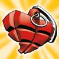

Old school heart.
No bullshit.
Tattoos to the Max steht für saubere Arbeit, klare Linien und Tattoos mit Rückgrat. Seit 1996 in Bad Ischl.
1996seitdem offen
100%handarbeit
4artists
Tattoo studio · Bad Ischl · Austria
Handgemachte Tattoos, klare Linien und Ideen, die bleiben. Mitten im Salzkammergut.
01 — Das Studio
Tattoos to the Max steht für saubere Arbeit, klare Linien und Tattoos mit Rückgrat. Seit 1996 in Bad Ischl.
02 — Artists
Residents und ein regelmäßiger Gast. Für Verfügbarkeit und neue Arbeiten direkt bei den Artists vorbeischauen.

03 — Aus dem Studio
04 — Gut zu wissen
✳Jeden 1. Samstag im Monat. Kleine Tattoos, max. handflächengroß. Terminannahme 11–12 Uhr — first come, first served.
Wir tätowieren Dienstag bis Samstag nach Terminvereinbarung. Schreib uns eine Mail oder DM auf Instagram.
Wir machen ausschließlich Tattoos. Dafür mit voller Aufmerksamkeit und viel Herzblut.
05 — Termine
Schick uns Motiv, Größe, Körperstelle und ein paar Referenzen. Wir melden uns mit dem nächsten freien Termin.
Auböckplatz 9
4820 Bad Ischl
Austria